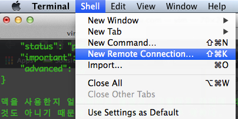
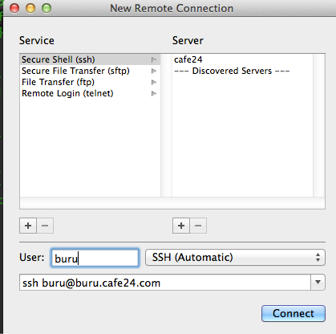

About Author

BuruKim
blog: http://buru1020.github.com
twitter: @
github: buru1020
웹개발자로 배우면서 프로그래밍에 빠져들고 있습니다.
About this Article
Date Released:
Friday, April 11 2014 1:01 AMMac에서 SSH로 cafe24에 접속하는 방법
맥을 사용한지 얼마되지고 않았고, 그렇다고 이전에 리룩스를 써보거나 한것도 아니기 때문에 커멘드 명령어는 매우 약하다. 이전에 윈도우에서 호스팅 할때는 putty를 이용해서 했었는데, 맥으로 넘어와서는 터미널로 어떻게 연결해야 하는지 검색을 해보니 역시나 친절하게 답변을 달아 놓은 블로그들이 있었다.
일단 터미널을 열고 아래와 같은 명령어를 입력하면 된다.
$ssh 아이디@접속주소
$ssh buru@buru.cafe24.com
위와 같이 바로 접속을 할수 있다.
또, 다른 방법으로는 미리등록을 해놓고 다름에 쉽게 불러다 쓸수 있는 방법이다.
먼저 터미널에서Shell > New Remote Connection.. 으로 가게되면

Server에서 '+'를 를 누르고 접속주소를 입력해주고 User 에 아이디를 입력하고, 하단에는 위에서 언급한 접속방법을 기제해주면, 다음에는 'Connet"만 누르고 바로 접속을 할 수 있다.

출처: http://blog.naver.com/PostView.nhn?blogId=youmitu&logNo=60128212455